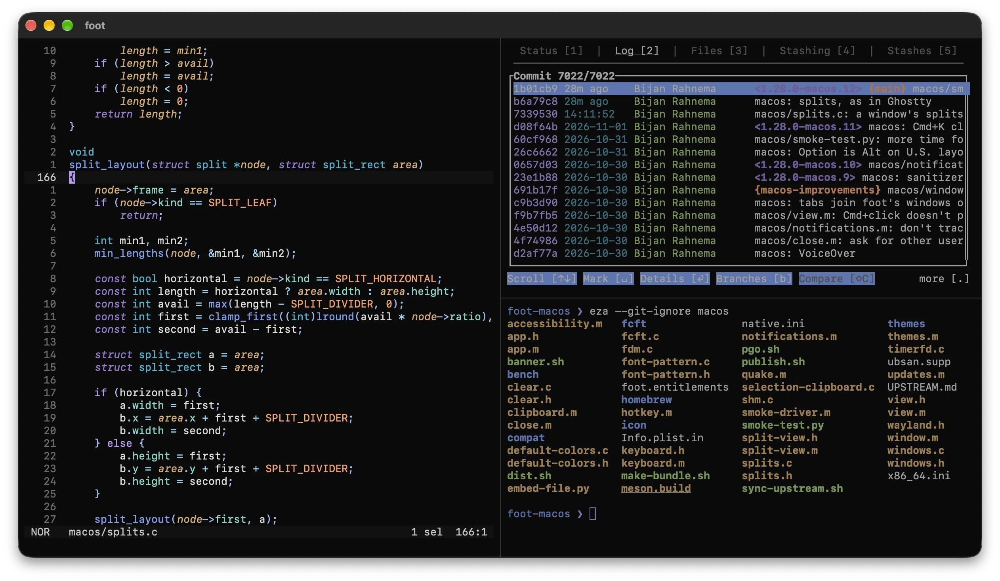

The fast, lightweight terminal emulator, native on the Mac.
foot comes from Linux, where it draws on Wayland. This port keeps its terminal core and builds the rest on AppKit, Core Animation, CoreText and kqueue. It starts in 75 ms, does nothing while idle, and what runs in it keeps running when you quit.
brew install --cask gobijan/tap/foot
A universal app for Apple silicon and Intel, signed and notarized, for macOS 14 and later.
An unofficial port, not affiliated with upstream foot.

It does nothing when you do nothing.
An idle foot window wakes up less than once a second and uses next to no CPU. Nothing polls. The display link is paused whenever nothing changes.
Frames are drawn on the CPU with pixman, exactly like upstream foot, and reach the screen as IOSurfaces without being copied. That is what keeps it lean.
- foot
- 75 ms
- kitty
- 683 ms
- Ghostty
- 155 ms
- foot
- 31 MiB
- kitty
- 86 MiB
- Ghostty
- 62 MiB
- foot
- 0.04 %
- kitty
- 0.29 %
- Ghostty
- 0.65 %
Throughput is where foot isn't first. Ghostty processes output the fastest; foot is behind kitty with text, and well ahead of it when scrolling.
| MiB/s in a 160×50 window, higher is better | foot | kitty | Ghostty |
|---|---|---|---|
| ASCII text | 90 | 117 | 240 |
| Unicode text | 62 | 78 | 90 |
| Colored cells | 112 | 124 | 126 |
| Scrolling | 48 | 9 | 46 |
| Scrolling region | 50 | 24 | 66 |
| Cursor motion | 92 | 105 | 202 |
Measured on 25 October 2026 on a Mac Studio (M1 Max, 32 GB) with macOS 27.0.1 and a 3840×1600 display at 144 Hz: foot 1.28.0-macos.2, kitty 0.49.2 and Ghostty 1.3.2, each with its default configuration and Menlo 14. All results and how they are measured are in the repository; make bench measures them on your Mac.
Quit foot. What runs in it keeps running.
Your programs don't run in the window. They run in footd, a small daemon that foot starts when it's needed, and the window only shows them. So they keep running when foot quits, crashes or is updated.
Open foot again and the windows are back where they were, with their tabs, splits and scrollback. The programs in them didn't notice. footd exits once there are no sessions left, and does nothing while idle.
~ ❯ ping 1.1.1.1PING 1.1.1.1 (1.1.1.1): 56 data bytes64 bytes from 1.1.1.1: icmp_seq=0 ttl=57 time=11.482 ms64 bytes from 1.1.1.1: icmp_seq=1 ttl=57 time=10.219 ms
On a server, the same. All it takes is SSH.
Shell > New Window on opens a window whose session runs on another machine: a Linux server, or another Mac. foot runs ssh HOST footd --bridge, and footd there keeps the programs, as it does here.
Close the lid, change the Wi-Fi, get on a train: the connection is lost, the programs aren't. The window says so, foot connects again on its own, and what they wrote meanwhile is there. Over plain ssh, they would have ended with the connection.
This Mac
~ ❯ ./migrate.sh900 batches to migratemigrated batch 1 of 900migrated batch 2 of 900
ssh build-1 footd --bridgebuild-1, a Linux server
Everything comes back
The screen and the alternate screen, so Vim and htop are as you left them. The scrollback, wrapped lines, the cursor, colors, titles and links.
One connection per machine
All windows, tabs and splits on a machine share it, and it uses your SSH configuration, keys and agent. Shell > Connections lists the machines, and how they're connected.
Nothing to set up there
If footd isn't on the machine yet, foot offers to install it: one static file in ~/.local/bin, no sudo. Passwords are asked for in a window, and can stay in the Keychain.
It behaves like the Mac apps around it.
Native tabs that drag between windows. Splits you move by their dots. Light and dark mode, Notification Center, Finder services, Secure Keyboard Entry and VoiceOver. Updates that install themselves.
And it is still foot: ~/.config/foot/foot.ini, footclient, scrollback search, URL mode, sixel and shell integration work as upstream's.
- ⌘ T
- New tab, in the same directory
- ⌘ D
- Split, side by side
- ⇧ ⌘ D
- Split, stacked
- ⌥ ⌘ →
- Focus the split in that direction
- ⇧ ⌘ ↩
- Zoom the focused split, and back
- ⌃ ⇥
- The next tab; with ⇧, the previous one
- ⌘ K
- Clear, keeping what you've typed
- ⌘ ,
- Open foot.ini in $EDITOR
- ⇧ ⌘ ,
- Reload foot.ini, in the open windows too
- ⌘ click
- Open a URL or a hyperlink
- ⇧ ⌘ K
- Connections to other machines
- ⌥ `
- Quake terminal, from any app
Quake terminal
A drop-down terminal that slides in over any app, full screen ones too, on every Space. Its hotkey needs no permissions.
More than 80 themes
Catppuccin, Dracula, Gruvbox, Nord, Solarized, Tokyo Night and the rest of foot's themes are in View > Theme. All windows switch right away. This page wears them too: try the Theme menu at the top.
Tabs in the titlebar
macos-titlebar-style=tabs puts the tab bar next to the window's buttons and gives the titlebar the terminal's background. Each tab shows its shortcut.
Everything it does has a name, and a command line.
The command palette finds what the menus have by typing a few letters: a split, a theme, a setting, another machine. What the menus get, the palette has.
The settings are among them. foot > Settings has the options one changes now and then, to choose from: the font and its size, the cursor, opacity and blur, the padding, the bell and more. Choosing one writes its line to foot.ini, leaves the rest of the file as you wrote it, and reloads it in the open windows.
So the file stays what's true, and ⌘ , still opens it in your editor, for everything else.
~ ❯ grep -v '^#' ~/.config/foot/foot.ini[main]font=monospace:size=13pad=8x8[cursor]style=blockblink=no~ ❯
- Show Quake Terminal
- Split Right⌘D
- Split Down⇧⌘D
- Theme: Default Colors
- Theme: nord
- Settings: Font Size: 13 pt✓
- Settings: Cursor: Block✓
- Settings: Cursor: Beam
foot @ runs the same commands from a script, the settings too. It starts programs in new windows, tabs and splits, lists the terminals, types into them and reads what they show.
zsh, bash and fish mark their prompts without anything in your startup files. That's what jumping from prompt to prompt, copying a command's output and the notification for a long build go by.
- ⇧ ⌘ P
- Command palette
- ⌘ ↑
- Jump to the previous prompt
- ⌘ ↓
- And to the next one
- ⇧ ⌘ O
- Open a URL, or a file, on the screen
- ⌥ click
- Move the cursor there, at the prompt
- ⌃ ⇧ H
- The scrollback, in a pager
- ⌃ ⇧ G
- And the last command's output
~ ❯ foot @ launch --type=split nvim2~ ❯ foot @ launch --type=tab --title=tests3~ ❯ foot @ send-text --match=title:tests 'make test\r'~ ❯ foot @ get-text --match=title:tests --command-outputOk: 3Fail: 0~ ❯ foot @ run Settings: Cursor: Beam~ ❯
Told when it's done
macos-notify-on-command-finish=10 notifies you when a command that took that long ends in a terminal you aren't looking at, with its exit status.
One keyboard, all splits
Shell > Send Input to All Splits sends what you type or paste to every split of the window: the same command on several machines at once.
Titles and blur
View > Change Title names a terminal, whatever runs in it. blur=yes blurs what's behind a transparent window.
Hints
Paths, git hashes, IP addresses, lines and words on the screen get labels, as URLs do. Type one to copy it, in upper case to type it into the terminal too. No mouse.
The scrollback, in a pager
Everything the terminal has shown, or what the last command printed, opens in less in a window of its own: to search it, or to read on while the terminal goes on.
The right terminal
--match picks terminals by their title, directory or program: foot @ send-text --match=program:less q is for all that run less.
foot's terminal core. The Mac's platform layer.
The VT parser, grid, sixel, search and URL mode are upstream foot's, unchanged. Only the platform layer is new, and it is native: no Wayland compositor, no X11, no emulation.
| Upstream, on Linux | On macOS | |
|---|---|---|
| Windows, input | Wayland | AppKit |
| Presentation | wl_shm buffers | IOSurfaces as CALayer contents, zero copy |
| Frame pacing | frame callbacks | CADisplayLink, paused when idle or hidden |
| Event loop | epoll | kqueue, integrated with the main run loop |
| Fonts | fcft on fontconfig, FreeType, HarfBuzz | the fcft API, implemented on CoreText |
| Keyboard | xkbcommon keymap from the compositor | xkbcommon keymap generated from the macOS layout |
| Input methods | text-input-v3 | NSTextInputClient: dead keys, IMEs |
| Clipboard | Wayland data devices | NSPasteboard |
pixman, utf8proc and xkbcommon are built from source and linked statically: the binary only depends on system frameworks. Upstream foot is merged every week.
Install foot
-
With Homebrew, which also puts
footandfootclientin your$PATH:brew install --cask gobijan/tap/foot -
Or download the zip from the latest release and move foot.app to Applications. It updates itself from then on.
-
Or build it, with Xcode's command line tools and
make deps:make install
A work in progress: usable day to day, but expect rough edges. Please report bugs on GitHub, not upstream.
Supporting the port
The port is a lot of ongoing work: the native platform layer, signed and notarized releases, automatic updates, the Homebrew cask, and keeping up with upstream foot every week. If you use foot on your Mac, please consider sponsoring its development.
Sponsorships go to the macOS port, not to upstream foot.
Sponsor on GitHub